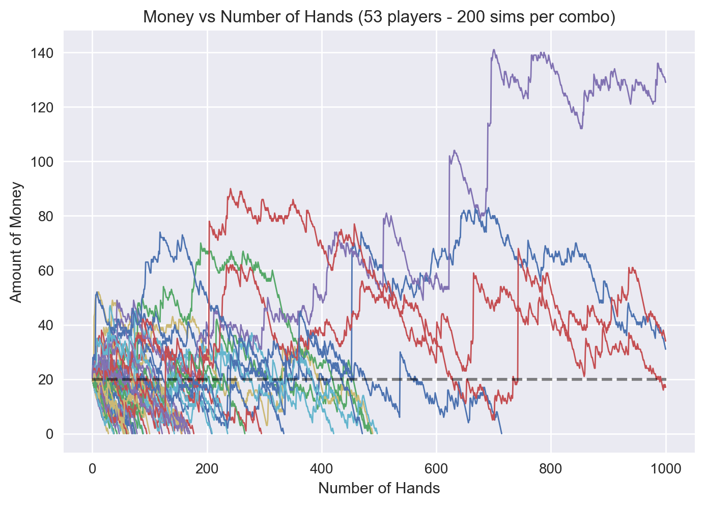

What is a Monte Carlo Simulation (Part 3)
Jan 22, 2018 - PythonThis is part 3 of a several part series dedicated to investigating how Monte Carlo can be a great tool. Part 1 introduces the concept of Monte Carlo. Part 2 teaches us how to do MC in Python. If you haven't read those yet, I recommend you start there. Part 4 attacks the problem of trying to do particle physics simulations with Monte Carlo.
Can you beat the casino in video poker?
Spoiler alert: No, you can't. If you could, the games wouldn't be in the casino. However, meta logic aside, how definite is it that the casino will always beat you? We're going to use Monte Carlo to explore that concept. The methodology will go a little bit like this: build out a python representation of a card deck, then use MC methodology to determine the best possible play you can make given your hand, then make that play and track your money over time.The MC part will come into play when we select which cards to hold in the game (if you aren't familiar with video poker, try checking this out: https://en.wikipedia.org/wiki/Video_poker#The_game). We'll see what cards we have, then simulate the results of choosing to hold the cards, and see what method gives us the best possible pay-out. Since this is a lot of work, I've put together a fairly long notebook that shows you all the code it takes to build a card deck, setup the poker game (we have to do the hand scoring), and then actually run the Monte Carlo simulations to see what happens. Throughout the Video Poker Monte Carlo Notebook there are lots of comments and text blurbs to explain the methodology. 